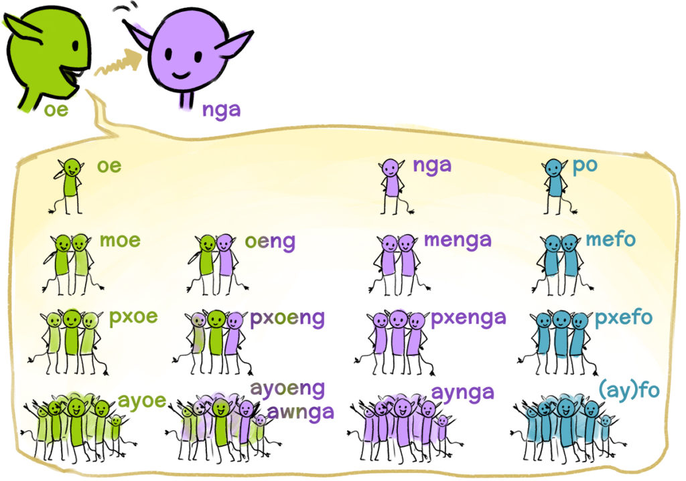

Chapter 4: Oe, Nga, Po
Topics: Pronouns, srak(e)
Text
Peyralìl sì Ninatìl sì Peyralä mesmukìl alu Tsireya sì Maranu na’rìngit tok ulte nìn ayioangit.
Peyral, Ninat, and Ninat’s two siblings, Tsireya and Maranu, are in the forest and are watching animals.
Peyral:
Mengal ayyerikit tse’a srak?
Do you two see the yeriks?
Tsireya:
Srane. Srake awngal yerikit taron?
Yes. Will we hunt the yeriks?
Peyral:
Kehe. Moe, alu Ninat sì oe, taron. Menga ‘ewan lu.
No. No, we two, Ninat and I, hunt. You two are young.
Peyral:
Srane! Nìn sì nume.
Yes! Observe and learn.
Peyral sì Ninat hum ulte mefol ayyerikit taron. Tsireyal sì Maranul mefoti nìn.
Peyral and Ninat leave and hunt the yeriks. Tsireya and Maranu are watching them both.
Maranu:
Oeng taronyu lu ye’rìn. Tsakrr oeng taron ulte mefol nìn!
We two will soon be hunters. Then, we will hunt and they both will watch!
Grammar
Overview of the pronouns
The pronouns in Na’vi are built quite easily. All that is needed to understand them are three words that we already know - »oe« (I), »nga« (you) und »po« (he/she) - as well as the plural forms that we have already got to know in chapter 3. From them, the personal pronouns can then be assembled:
Singular
Dual
Trial
Plural
1st person inclusive
oe - I
oeng - we two
pxoeng - we three
ayoeng/awnga - we all
1st person exclusive
moe - we two
pxoe - we three
ayoe - we all
2nd person
nga - you
menga - you two
pxenga - you three
aynga - you all
3rd person
po - he/she/they
mefo - they (2)
pxefo - they (3)
(ay)fo - they all
However, what is the difference between the inclusive and the exclusive forms of »we«? That can be best explained using an example from the text:
Moe, alu Ninat sì oe, taron.
We two, Ninat and I, hunt.
Oeng taronyu lu ye'rìn.
We two will soon be hunter.
In the first sentence, Peyral is talking to her younger sister Tsireya, but does not include her in »we«. She is talking about herself and Ninat, the addressed Tsireya is however not included.
In the second sentence, Maranu is talking to Tsireya and means by »we« also herself and her sister. She also means by her »we« in practice »oe« + »nga«, from which the inclusive pronoun »oeng« is developed.
Thus, it always depends if the addressed person is included in »we« or not.
By the way, instead of »ayoeng« the shortened form »awnga« can also be used. Both words mean the same thing, but since the Na’vi prefer shorter statements, »awnga« is used more often, especially in casual speech.
Here another overview, in which the person pronouns are represented figuratively:

Image by EanaUnil
Case endings with pronouns
There are two things to notice about case endings with pronouns. First, there are the inclusive forms of »we«, where the hidden »a« from »nga« reappears when a case ending is added:
oeng
oengal
oengat(i)
oengar(u)
oengeyä
pxoeng
pxoengal
pxoengat(i)
pxoengar(u)
pxoengeyä
ayoeng
ayoengal
ayoengat(i)
ayoengar(u)
ayoengeyä
Looking at the genitive ending -yä in the last table, it is furthermore noticeable that there is for example »oengeyä« instead of *oengayä. With the genitive, »nga«, »po« as well as their plural forms also change accordingly:
nga
ngeyä
mengeyä
pxengeyä
ayngeyä
po
peyä
mefeyä
pxefeyä
(ay)feyä
Srak and srake
In the first chapter, »srak« was already used, but not explained. If we look at the sentences from this chapter, it becomes quickly evident that »srak« and »srake« always occur in connection with questions:
Ngaru lu fpom srak?
How are you? / Literally ”Do you have well-being?”
Mengal ayyerikit tse’a srak?
Do you two see the yeriks?
Srake awngal yerikit taron?
Will we hunt the yeriks?
»Srake« and »srak« bring about exactly the same thing: They transform a sentence into a question that can be answered with yes or no - which can be explained quite simply if it is known that »srake« comes from »srane« (yes) and »kehe« (no) and if one looks then at the literal translation of the questions:
Mengal ayyerikit tse’a srak?
You two see the yeriks, yes/no?
Srake awngal yerikit taron?
We hunt the yeriks, yes/no?
It essentially does not matter if »srak« or »srake« is used. Note however that »srake« always comes at the beginning of the sentence, while »srak« comes at the end. Also, it is often more practical for the other person when it is made clear right at the beginning of the sentence that it deals with a question, because of that »srake« is sometimes the better choice. However, both variations mean exactly the same thing and can thus be used interchangeably.
Summary
Overview of the pronouns
Singular
Dual
Trial
Plural
1st person inclusive
oe - I
oeng - we two
pxoeng - we three
ayoeng/awnga - we all
1st person exclusive
moe - we two
pxoe - we three
ayoe - we all
2nd person
nga - you
menga - you two
pxenga - you three
aynga - you all
3rd person
po - he/she/they
mefo - they (2)
pxefo - they (3)
(ay)fo - they all
Particularities about case endings with pronouns
oeng, pxoeng, ayoeng
po, nga and all plural forms
With case endings, the a from nga reappears!
-> oengal, oengati, ...
With the genitive, a/o -> e
-> peyä, ngeyä, mefeyä, ...
Srake and srak
Mengal ayyerikit tse’a srak?
You two see the yeriks, yes/no?
-> Do you see the yeriks?
Srake awngal yerikit taron?
We hunt the yeriks, yes/no?
-> Do we hunt the yeriks?
Exercises
1. Reading
Read the text aloud. Focus on the exact pronunciation, even if it makes you speak more slowly. If you have the possibility, look for someone on Discord who can read with you.
2. Which pronouns are right for the following situations?
- a) You tell a friend that you and two other friends were in the woods. pxoe
- b) You suggest to a colleague that you two could go out together for lunch. oeng
- c) You encounter two friends and ask them what they are doing. menga
- d) You are with a group and suggest that you all could go to the park. ayoeng/awnga
- e) You tell someone that your parents are away for the weekend. mefo
3. Translate the following sentences:
- a) We are searching for our friend. Ayoengal fwew ‘eylan ayoengeyä. Instead of ayoengal you can also use awnga or ayoe.
- b) Her mother is in the forest. Peyä sa’nokìl na’rìngit tok.
- c) Do you both have a book? Mengaru lu puk?
- d) Srake pxeforu lu fpom? How are you (three)?
- e) Feyä karyu oe lu. I am their teacher.
- f) Oengal ayioangit taron. We both hunt the animals.
4. Transform the following sentences into questions:
- a) Ayngal na’rìngit tok. Srake ayngal na’rìngit tok? / Ayngal na’rìnit tok srak?
- b) Pxoengìl yerikit nìn taronsì. Srake pxoengìl yerikit nìn taronsì? / Pxoengìl yerikit nìn taronsì srak?
- c) Pxengeyä sa’nok taronyu lu. Srake pxengeyä sa’nok taronyu lu? / Pxengeyä sa’nok taronyu lu srak?
- d) Ikran lu. Srake ikran lu? / Ikran lu srak?
Vocab
‘ewan (adj.) [ˈʔɛ.wan] - young | Nga ‘ewan lu. - You are young.
awnga (pn.) [aw.ˈŋa] - we all (inclusive) | Srake awngal yerikit taron? - Will we hunt the yeriks?
ayfo (pn.) [aj.ˈfo] - they all | Ayfo hum. - They all leave.
aynga (pn.) [aj.ˈŋa] - you all | Ayngaru lu fpom srak? - How are you?
ayoe (pn.) [aj.ˈo.ɛ] - we all (exclusive) | Ayoel taron yerikit ulte ngal nìn. - We are hunting the yerik and you are watching.
ayoeng (pn.) [aj.ˈwɛŋ] - we all (inclusive) | Ayoengal tsrayti tok. - We are all in the village.
fo (pn.) [fo] - they all | Feyä karyu oe lu. - I am their teacher.
hum (vin.) [hum] - to leave, to go away | Peyral sì Ninat hum ulte mefol ayyerikit taron. - Peyral and Ninat leave and hunt the yeriks.
kehe (intj.) [ˈkɛ.hɛ] - no | Kehe, mengal ‘ewan lu. - No, you are young.
menga (pn.) [mɛŋa] - you two | Mengal ayyerikit tse’a srak? - Do you both see the yeriks?
moe (pn.) [ˈmo.ɛ] - we two (exclusive) | Moe, alu Ninat sì oe, taron. - We two, Ninat and I, hunt.
na'rìng (n.) [ˈnaʔ.ɾɪŋ] - forest | Maranul na’rìngit tok ulte nìn ayioangit. - Maranu is in the forest and is watching animals.
nume (vin.) [ˈnu.mɛ] - to learn | Nìn sì nume. - Observe and learn.
oeng (pn.) [wɛŋ] - we two (inclusive) | Oeng taronyu lu ye’rìn. - We two will soon be hunters.
pxenga (pn.) [pʼɛ.ˈŋa] - you three | Pxengeyä sa’nok lu ’eylan oeyä. - The mother of you three is my friend Mutter.
pxoe (pn.) [ˈpʼo.ɛ] - we three (exclusive) | Pxoeyä sa’nokit oel fwew. - I am searching for our mother.
pxoeng (pn.) [pʼo.ˈɛŋ] - we three (inclusive) | Pxoengìl yerikit nìn taronsì. - We three are watching and are hunting the yerìk.
srake (part.) [ˈsɾa.kɛ] - Question particle for yes/no questions | Srake ngaru lu fpom srak? - How are you? | Srake nga hum set? - Are you leaving now?
tsakrr (adv.) [͡tsa.ˈkrˌ] - then | Oeng taronyu lu ye’rìn, tsakrr oeng taron ulte mefol nìn! - We two will soon be hunters, then we will hunt and they both will watch!
ye'rìn (adv.) [ˈjɛʔ.ɾɪn] - soon | Oeng taronyu lu ye’rìn ulte tsakrr oeng taron ulte mefol nìn! - We two will soon be hunters, and then we will hunt and they both will watch!